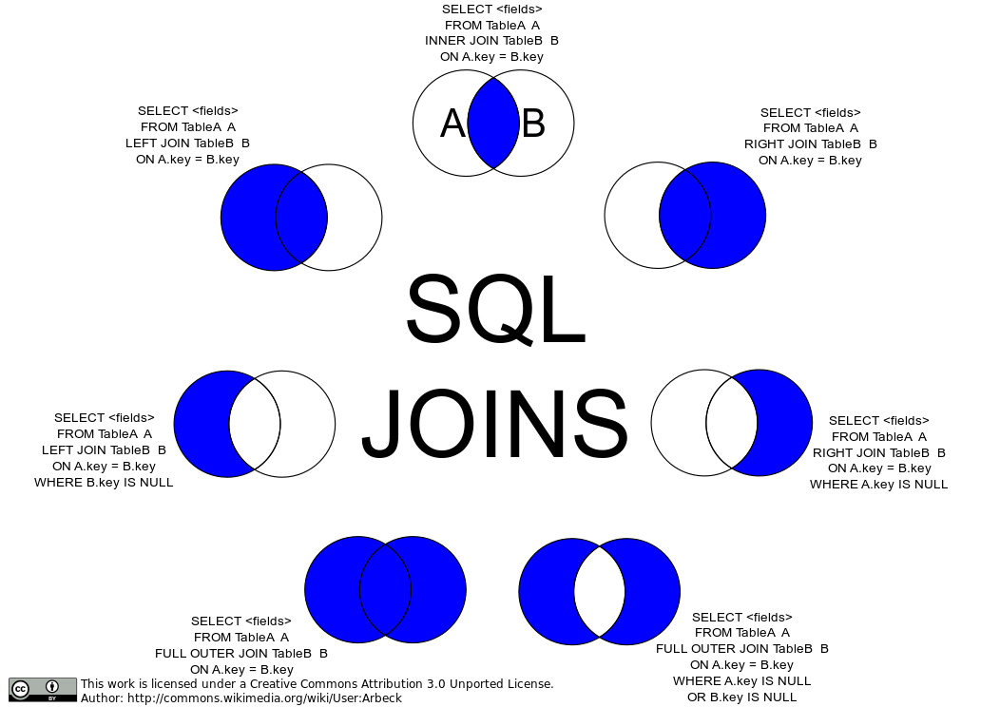

Multi Table Joins¶
Joins¶
- Inner join: An inner join returns all rows from both tables where the join condition is satisfied. Stated differently, there is a match in both tables and only those records are returned.
- Left join: A left join returns all rows from the left table, even if there are no matching rows in the right table. The right table will only return rows that match the join condition.
- Right join: A right join is the opposite of a left join. It returns all rows from the right table, even if there are no matching rows in the left table. The left table will only return rows that match the join condition.
- Self join: A self-join is a join between two tables that are the same table. This can be used to find relationships between rows in the same table.
- Cross join: Returns all records from both tables.

-- 03/09/23
create or replace database zdbjoins;
use zdbjoins;
create or replace table tbl_person
(
fname varchar(50),
person_id int(9) not null auto_increment primary key
);
create or replace table tbl_car
(
make varchar(50),
model varchar(50),
color varchar(50),
person_id int(9),
car_id int(9) not null auto_increment primary key,
constraint fk_carperson foreign key(person_id)
references tbl_person(person_id)
);
insert into tbl_person(fname,person_id)
values ('Ally',1),('Bob',2),('Bubba',3),('Billy',4),
('Danny',5),('David',6),('Jim',7),('Jack',8);
insert into tbl_car(make,model,color,person_id)
values ('Ford','F150','red',2),
('Ford','F150','red',3),
('Ford','Mustang','yellow',4),
('Ford','Fiesta','green',null),
('Scion','XB','blue',null),
('Subaru','Forester','forest',5);
Select * from tbl_person;
Select * from tbl_car;
-- cartesian product
-- **** VERY VERY BAD ********
Select tbl_person.fname, tbl_car.make, model
from tbl_person Join tbl_car;
-- INNER JOIN --
-- Connect where there is a one to one match
Select tbl_person.fname, tbl_car.make, model
from tbl_person Inner Join tbl_car
on tbl_person.person_id = tbl_car.person_id;
-- output label
Select "Left Join";
-- LEFT JOIN --
-- Connect where you show ALL of the data in
-- the left table [tbl_person] and
-- only the data in the right table[tbl_car]
-- that has a match
Select tbl_person.fname, tbl_car.make, model
from tbl_person Left Join tbl_car
on tbl_person.person_id = tbl_car.person_id;
-- output label
Select "Right Join";
-- RIGHT JOIN --
-- Connect where you show ALL of the data in
-- the right table [tbl_car] and
-- only the data in the left table[tbl_person]
-- that has a match
Select tbl_person.fname, tbl_car.make, model
from tbl_person Right Join tbl_car
on tbl_person.person_id = tbl_car.person_id;
-- output label
Select "Cross Join";
-- Cross JOIN --
-- Connect where you show ALL of the data in
-- the right table [tbl_car] and
-- all of the data in the left table[tbl_person]
-- There will be nulls from both tables
Select *
From tbl_person LEFT Join tbl_car
on tbl_person.person_id = tbl_car.person_id
UNION
Select *
From tbl_person Right Join tbl_car
on tbl_person.person_id = tbl_car.person_id;
/*
Note that the UNION will delete any duplicates.
If you wanted to see duplicates, then you use UNION ALL
*/.
/*
######### NOTE: ################
Some forms of SQL including mysql
they will equate an
inner join/ join/cross join
as the same. In the standard,
they are not the same.
#################################
*/
-- ---------- Similiar Tables --------------------------
-- Dealing with two similar tables
-- putting two tables together
create table tbl_hunters
(
fname varchar(50),
lname varchar(50),
type varchar(50),
hunters_id int(9) not null auto_increment primary key
);
create table tbl_fishermen
(
fname varchar(50),
lname varchar(50),
type varchar(50),
fisherman_id int(9) not null auto_increment primary key
);
-- in the tables below
-- Dan, Jon and Tom are in both groups
insert into tbl_hunters(fname,lname,type)
values ("Bob","Barker","hunter"),
("Ali","Allison","hunter"),
("Car","Carlson","hunter"),
("Dan","Dunsford","hunter"),
("Jon","Jones","hunter"),
("Tom","Troves","hunter"),
("Sam","Smith","hunter"),
("Tim","Truvers","hunter");
Select * From tbl_hunters;
insert into tbl_fishermen(fname,lname,type)
values ("Bobby","Barnes","fisherman"),
("Alley","Allsford","fisherman"),
("Carrie","Cooper","fisherman"),
("Dan","Dunsford","fisherman"),
("Jon","Jones","fisherman"),
("Tom","Troves","fisherman"),
("Sammy","Smothers","fisherman"),
("Thomas","Tuffy","fisherman");
Select * From tbl_fishermen;
-- combine both tables - UNION
Select fname,lname,type from tbl_hunters
UNION
Select fname,lname, type from tbl_fishermen
Order by fname, lname;
Select fname,lname from tbl_hunters
UNION
Select fname,lname from tbl_fishermen
Order by fname, lname;
-- preserves the duplicates
Select fname,lname from tbl_hunters
UNION ALL
Select fname,lname from tbl_fishermen
Order by fname, lname;
-- ensures that there is one distinct
-- entry for each name
Select fname,lname from tbl_hunters
UNION DISTINCT
Select fname,lname from tbl_fishermen;
-- find overlapping / intersecting names
-- find members in both groups
Select fname,lname from tbl_hunters
Intersect
Select fname,lname from tbl_fishermen;
-- this exludes the overlapping names
Select fname,lname from tbl_hunters
Except
Select fname,lname from tbl_fishermen;